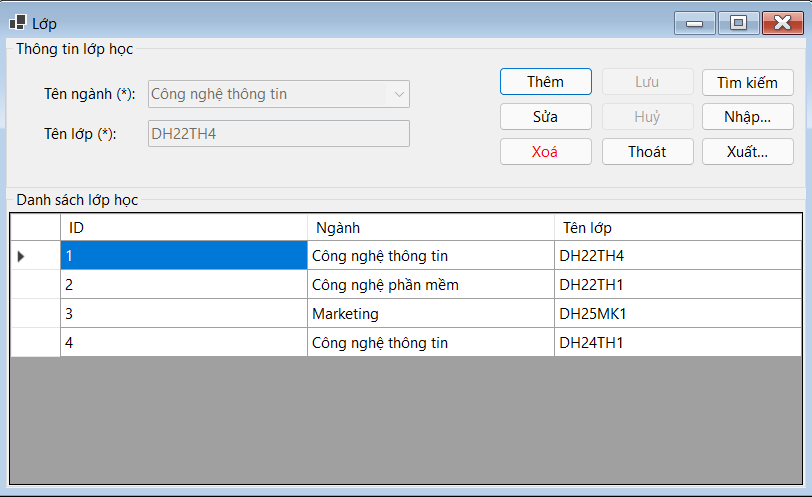

Hướng dẫn sử dụng màn hình Lớp.
Cách dùng: Chọn Dữ liệu: Nhấp chuột vào hàng trong DataGridView để chọn lớp cần sửa hoặc xóa, sửa Dữ liệu: Chọn hàng, nhấn Sửa, chỉnh sửa thông tin và nhấn Lưu, xóa Dữ liệu: Chọn hàng, nhấn Xóa và xác nhận, cập nhật DataGridView: Sau mỗi thao tác, nạp lại dữ liệu để cập nhật thông tin mới nhất.
Bước 1: Nhấn nút Thêm.
Bước 2: Các điều khiển (các nút, combobox, textbox) sẽ được kích hoạt.
Bước 3: Combobox cboNganh được làm trống.
Bước 4: Textbox txtTenLop được xóa nội dung.
Bước 1: Chọn lớp học cần sửa từ DataGridView.
Bước 2: Nhấn nút Sửa.
Bước 3: Các điều khiển (các nút, combobox, textbox) sẽ được kích hoạt.
Bước 4: Biến id được gán giá trị ID của lớp học được chọn.
Bước 1: Chọn lớp học cần xóa từ DataGridView.
Bước 2: Nhấn nút Xóa.
Bước 3: Hiển thị hộp thoại xác nhận xóa.
Bước 4: Nếu xác nhận, tìm đối tượng Lop cần xóa bằng ID.
Bước 5: Xóa đối tượng khỏi cơ sở dữ liệu và lưu thay đổi.
Bước 6: Tải lại dữ liệu và giao diện ban đầu.
Bước 1: Nhấn nút Lưu.
Bước 2: Nếu combobox cboNganh hoặc textbox txtTenLop để trống, hiển thị thông báo lỗi.
Bước 3: Nếu là thêm mới (biến xuLyThem là true): Tạo đối tượng Lop mới và gán giá trị từ các điều khiển. Thêm đối tượng vào cơ sở dữ liệu và lưu thay đổi.
Bước 4: Nếu là sửa (biến xuLyThem là false): Tìm đối tượng Lop cần sửa bằng ID. Cập nhật giá trị từ các điều khiển và lưu thay đổi.
Bước 5: Tải lại dữ liệu và giao diện ban đầu.
Bước 1: Nhấn nút Nhập.
Bước 2: Hiển thị hộp thoại chọn tập tin Excel.
Bước 3: Chọn tập tin cần nhập và nhấn Open.
Bước 4: Đọc dữ liệu từ tập tin Excel vào đối tượng DataTable.
Bước 5: Thêm dữ liệu vào cơ sở dữ liệu và lưu thay đổi.
Bước 5: Hiển thị thông báo thành công và tải lại dữ liệu.
Bước 1: Nhấn nút Xuất.
Bước 2: Hiển thị hộp thoại lưu tập tin Excel.
Bước 3: Chọn nơi lưu và đặt tên tập tin, sau đó nhấn Save.
Bước 4: Tạo đối tượng DataTable và thêm dữ liệu lớp học vào bảng.
Bước 5: Tạo workbook Excel và lưu dữ liệu vào tập tin.
Bước 6: Hiển thị thông báo thành công.